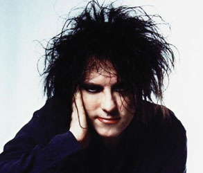

Biografia
Em 21 de abril de 1959 nascia em Blackpool, Inglaterra, aquele que seria o líder de umas das maiores e mais importantes bandas de Rock do cenário mundial. Seu nome era Robert Smith. Cresceu no bairro de Crowley, periferia de Sussex e desde cedo sofreu diversas influências musicais. Seus irmãos ouviam Beatles e Jimi Hendrix, e ainda havia a crescente onda punk da década de 70 na Inglaterra.
Com 16 anos, Robert forma a banda Malice que logo após viria a se chamar Easy Cure. Com ele, tocavam o guitarrista e tecladista Porl Thompson, o baixista Michael Dempsey, e o baterista (e depois tecladista) Laurence "Lol" Tolhurst. Ainda com o nome de Easy Cure eles participam, em abril de 1977, de um de um concurso musical na Alemanha, promovido pela gravadora "Hansa", cujo prêmio incluía a produção de uma demo-tape e um possível contrato de cinco anos. Eles ganham o concurso mas não conseguem gravar a demo, já que a gravadora esperava um som mais punk. Fazem alguns shows até o final daquele ano, mas permanecem chateados com a exigência da Hansa de fazer covers de punk rock.
Até março de 1978 eles ainda não haviam conseguido gravar nenhuma demo pela Hansa, então decidem investir numa gravação demo própria. Gravam as músicas Killing an Arab, Boys Don't Cry, Fire In Cairo, It's Not You e 10:15 Saturday Night. Levam a fita demo para várias gravadoras e Chris Parry, diretor artístico da Polygram inglesa, se interessa e posteriormente resolve produzir o primeiro single da banda. Assim, a banda, agora sem Porl Thompson, muda o nome para The Cure e Parry passa a empresariar a banda.
Em setembro de 1978 eles gravam o single Killing An Arab e com a divulgação promovida por Parry conseguem uma boa vendagem em pouco tempo.
Em 1979, enquanto faziam várias apresentações agendadas por Parry, o Cure começava a produzir aquele que seria o seu primeiro álbum: Three Imaginary Boys. O álbum tem uma boa aceitação embora não tenha emplacado logo de cara. Nos Estados Unidos, o disco é lançado em 1980, com o nome de Boys Don’t Cry.
Logo após, o Cure lança os singles Boys Don't Cry e Jumping Someone Else’s Train e o sucesso cresce cada vez mais.
No segundo álbum, 17 Seconds (1980), a banda começa a ter um significativo avanço na técnica de estúdio. Neste álbum, o acompanhamento sutil dos teclados, em arranjos de estrutura minimalista, contribui na construção de uma atmosfera já um tanto sombria e depressiva que os caracterizaria daí pra frente. A música A Forest impulsionou as vendas do álbum em todo o mundo e a banda arrisca a sua primeira turnê mundial. Todos os discos desde então apenas viriam a confirmar a popularidade crescente.
Dando continuidade com a mudança sonora, o terceiro álbum, Faith (1981), e o quarto, Pornography (1982), marcam a fase mais sombria do Cure refletindo um período muito conturbado de Robert Smith, perpassado por problemas com drogas e principalmente alcoolismo. As letras são muito tristes e os arranjos expressam toda a depressão de Robert. Em razão desses álbuns e dessa fase obscura, eles ganham o rótulo de góticos ou "darks", aqui no Brasil. Nesse período, há várias mudanças de formação da banda, inclusive com a saída de Simon Gallup por desentendimentos com Robert Smith. Nessa época Smith, chega a fazer algumas participações como guitarrista pelo Siouxsie and The Banshees.
Após essa fase conturbada, o Cure volta com uma proposta mais pop e um tanto quanto psicodélica. Smith já estava cansado dos discos estarem atraindo platéias cada vez mais raivosas e depressivas. Assim, esse tempo resulta num EP chamado Japanese Whispers (1983), com as clássicas The Walk, Lovecats e Let’s Go To Bed, basicamente eletrônicas.
Em 1984 é lançado The Top, considerado pela crítica como o melhor trabalho do Cure até então, ao contrário de Bob Smith, que o considerou o pior disco, por problemas de mixagem. Esse disco, mistura psicodelia, pop de boa levada e aquele toque soturno bem dosado.
O ano de 1985 foi marcado por uma virada na vida do Cure. A banda parou de consumir drogas e teve uma das melhores fases, com o sucesso do disco The Head on the Door, de altíssima rotatividade aqui no Brasil, com In Between Days (usada na abertura do programa Clip Clip, da Globo, em 1985 e 1986) e Close to Me (que ganhou o astronauta de prata da MTV como melhor clipe do ano em 1985). É um disco pop, em que a depressão dá lugar a uma leve melancolia.
O ano seguinte foi o da consagração da banda. Lançaram a coletânea Standing On The Beach que teve seu nome mudado para Staring At The Sea. Eles estouram em todo o mundo, fazendo dezenas de shows.
Em 1987, a banda passa semanas de reclusão em uma mansão campestre isolada do público, para começar a compor e ensaiar as músicas do próximo disco, Kiss Me Kiss Me Kiss Me. Lançado no dia 5 de maio de 1987, o disco trazia 17 faixas e alguns dos mais belos momentos da carreira do grupo. Mas o grande momento para os fãs brasileiros foi a presença do grupo no país, por duas semanas, aportando no Brasil no dia 19 de março 1987. A banda havia começado uma imensa turnê de 70 shows pelo mundo. Ao todo no Brasil, foram oito shows, apresentados nas cidades de Porto Alegre (dois), Belo Horizonte (um), Rio de Janeiro (dois) e São Paulo (três).
No ano seguinte, o Cure deu uma parada com os trabalhos. Robert Smith casa-se com sua noiva Mary, em agosto. Laurence Tolhurst sai da banda por motivos pessoais, e ainda tenta mover um processo para ficar com o nome e parte dos lucros da banda.
Em 1989 a banda lança o disco Disintegration, no geral gravado ao vivo, com muito baixo de seis cordas e arranjos elaborados e extensos, resultando em um disco melancólico, triste, mas bonito. Para muitos o disco significava o fim do Cure.
A banda lança em 1990, Mixed Up, um álbum de remixes velhos. Dois anos depois, o inédito Wish coloca o The Cure de volta nas rádios com a pop Friday I’m In Love. Assim eles voltam a rodar o mundo numa gigantesca turnê, tocando em espetáculos lotados, onde quer que fossem. Através do "Wish Tour", eles gravam em 1993, os discos ao vivo Show e Paris.
Depois de muita espera, em 1994 termina o processo movido por Laurence Tolhurst, tendo resultado a favor de Robert Smith e da gravadora Fiction Records.
Em 1996, o Cure se apresenta no Brasil novamente, agora na última edição do Hollywood Rock, motivados por uma abaixo-assinado que os fãs brasileiros organizaram. Nesse show, músicas de um álbum em andamento foram apresentadas, Wild Mood Swings. Esse disco é lançado assim que a banda retorna à Inglaterra. Logo depois, o Cure parte para uma nova turnê, a "The Swing Tour", que teve mais de 100 apresentações ao redor do globo.
Durante o ano de 1997, o Cure lança Galore, uma coletânea da segunda década de músicas do Cure, que inclui a nova canção Wrong Number. No começo de 1998, Robert Smith aparece em um episódio do desenho animado americano South Park, e participa da trilha sonora do filme Orgazmo, de Trey Parker e Matt Stone, com a música A Sign From God. Com a sua banda, Robert grava a música World In My Eyes para um tributo ao Depeche Mode e grava também More Than This para a trilha sonora do seriado The X-Files. No fim do ano, a banda volta aos estúdios ao lado do produtor Paul Corkett para a gravação de um novo disco, o qual só seria terminado em meados de 1999 e lançado oficialmente em 2000. Bloodflowers foi, na opinião de Robert, o disco mais perfeito lançado pela banda. Há rumores de que seria o último trabalho do Cure, mas isso não se concretiza posteriormente.
Em 2001, Robert reúne a banda novamente e o The Cure participa do festival alternativo europeu Roskilde. No mesmo ano é lançada a coletânea Greatest Hits, que vem com duas faixas inéditas, Cut Here e Just Say Yes. No embalo, também sai um DVD com o mesmo nome, trazendo diversos vídeo-clipes de toda a carreira do Cure.
O DVD épico Trilogy vem a seguir, em 2003, com shows em Berlim nos quais a banda tocou, em seqüência, três álbuns completos: Pornography, Disinte-gration e Bloodflowers. Como se não fosse o bastante para os fãs, os extras continham entrevistas da banda falando sobre as gravações do disco a ser lançado no ano seguinte.
No ano de 2004, após lançar no começo do ano o box set Join the Dots (uma compilação de material inédito, b-sides e versões alternativas, em quatro discos) a banda lança em junho o sucessor de Bloodflowers, intitulado simplesmente The Cure. O álbum acaba sendo elogiado pela crítica, com canções sombrias, atmosféricas, mas que não deixam de lado a veia pop do Cure. Os destaques são para End of The World, e também para as belas Lost e Before Three. Ainda, o primeiro álbum da banda (Three Imaginary Boys) é remasterizado e lançado para os fãs mais velhos. No ano seguinte o Cure sai novamente em turnê para divulgar seu novo disco.
Em 2005, a banda dá sequência aos lançamentos de remasterizações: Seventeen Seconds, Faith e Pornography (todos como "Deluxe Edition"). Em maio, os integrantes Perry Bamonte e Roger O'Donnel abandonam o The Cure sem apresentarem motivos. Porl Thompson é convidado a ocupar a função de guitarrista.
Já em 2006, é lançado, exclusivamente na Internet, a coletânea 4Play com novas versões de velhos clássicos. Em seguida, The Top, The Head On The Door e Kiss Me Kiss Me Kiss Me também entram na linha de remasterizações. Em maio é lançado o DVD e o CD The Cure Festival com trinta músicas extraídas de apresentações realizadas em diversos festivais do ano anterior. Desde então, há rumores de um novo álbum em fase de conclusão. Robert Smith chegou a admitir atravessar uma crise criativa para composição de novas letras. No entanto, em meados de 2007, a banda já visitava vários países em uma turnê mundial.
No ano seguinte, a banda passou a disponibilizar um single por mês a fim de despertar a curiosidade dos fãs. Finalmente, em outubro, é lançado oficialmente o décimo terceiro álbum da carreira. 4:13 Dream traz 13 faixas inéditas que não se propõem a inovar ou modernizar a identidade da banda. Este é um trabalho que ratifica o estilo Rock/Pop consagrado sem que, no entanto, seja repetitivo. De qualquer forma, um disco novo do The Cure é sempre um evento que, no mínimo, merece atenção dos velhos e novos ouvintes.
O The Cure foi, sem dúvida, uma das bandas mais importantes da década de 80. Responsáveis por grande parte dos hits dessa época, o grupo ainda continua fazendo história, mais de 25 anos após o lançamento do primeiro álbum. Com o lendário Robert Smith, o único remanescente desde o início, a banda ultrapassa os limites de qualquer rótulo que já tenha sido enquadrada e continua agradando a todos os adoradores do bom e velho Rock.